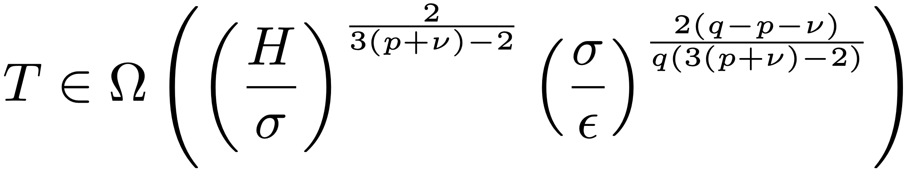
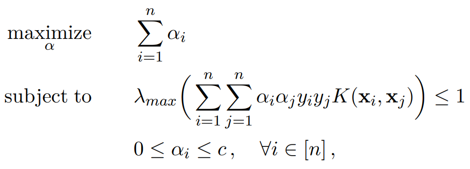
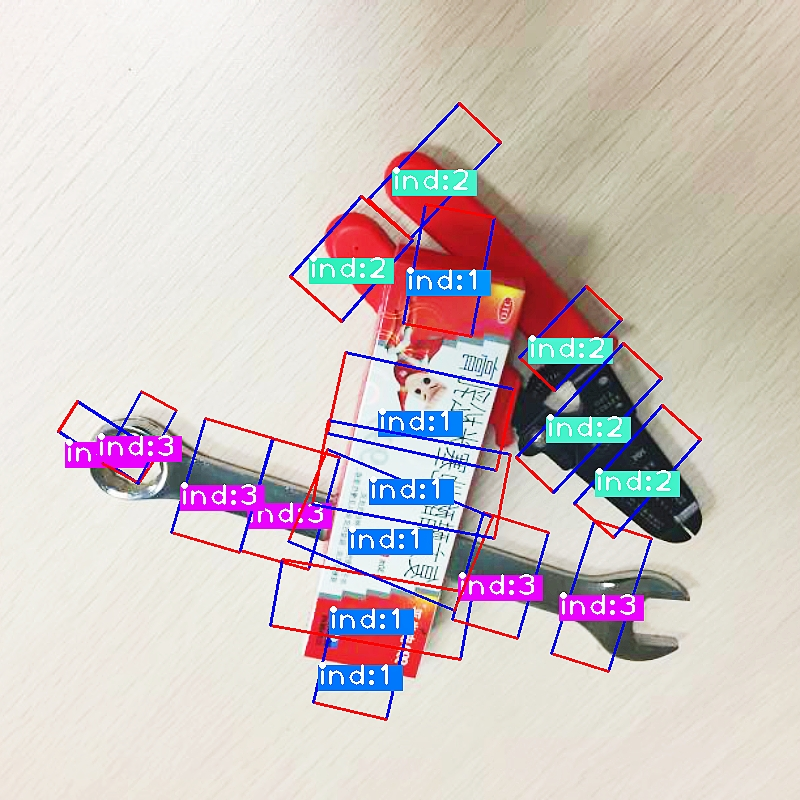
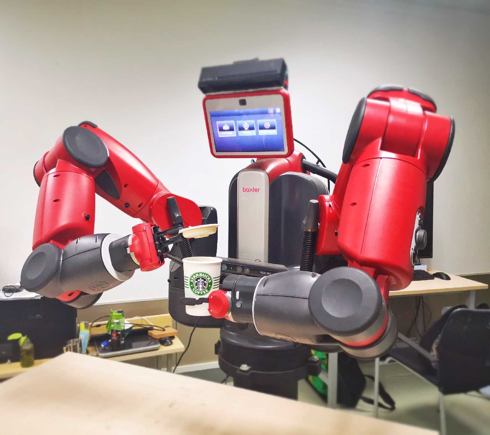
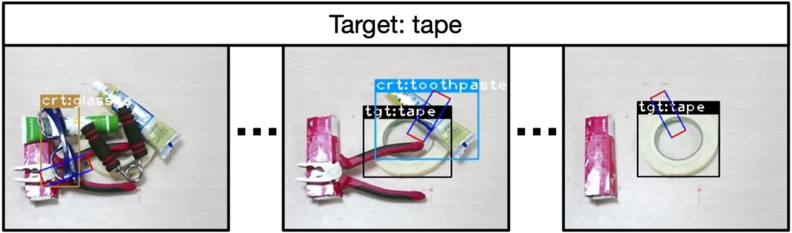

Adaptive methods like Adam have become the de facto standard for large-scale vector and Euclidean optimization due to their coordinate-wise adaptation with a second-order nature. More recently, matrix-based spectral optimizers like Muon show the power of treating weight matrices as matrices rather than long vectors. To address the difficulty of linking these approaches, we reformulate the AdaGrad update and decompose it into a variance adaptation term and a scale-invariant term. This decoupling produces DeVA (Decoupled Variance Adaptation), a framework that bridges vector-based variance adaptation and matrix spectral optimization, enabling a seamless transition from Adam to adaptive spectral descent. Experiments across language modeling and image classification show that DeVA consistently outperforms state-of-the-art methods such as Muon and SOAP, reducing token usage by around 6.6%. Theoretically, the variance adaptation term improves blockwise smoothness and facilitates faster convergence.
Publications
Complete publication list, with abstracts and media
[1] Decoupling Variance and Scale-Invariant Updates in Adaptive Gradient Descent for Unified Vector and Matrix Optimization
The 43rd International Conference on Machine Learning (ICML 2026)
Zitao Song, Cedar Site Bai, Zhe Zhang, Brian Bullins, David F. Gleich
[2] Model Immunization from a Condition Number Perspective
[Oral, Top 1%] The 42d International Conference on Machine Learning (ICML 2025)
Cedar Site Bai*, Amber Yijia Zheng*, Brian Bullins, Raymond A. Yeh
Model immunization aims to pre-train models that are difficult to fine-tune on harmful tasks while retaining their utility on other non-harmful tasks. Though prior work has shown empirical evidence for immunizing text-to-image models, the key understanding of when immunization is possible and a precise definition of an immunized model remain unclear. In this work, we propose a framework, based on the condition number of a Hessian matrix, to analyze model immunization for linear models. Building on this framework, we design an algorithm with regularization terms to control the resulting condition numbers after pre-training. Empirical results on linear models and non-linear deep-nets demonstrate the effectiveness of the proposed algorithm on model immunization. The code is available at this https URL.
[3] Stacey: Promoting Stochastic Steepest Descent via Accelerated \(\ell_p\)-Smooth Nonconvex Optimization
The 42d International Conference on Machine Learning (ICML 2025)
Cedar Site Bai*, Xinyu Luo*, Bolian Li*, Petros Drineas, Ruqi Zhang, Brian Bullins
While popular optimization methods such as SGD, AdamW, and Lion depend on steepest descent updates in either \(\ell_2\) or \(\ell_\infty\) norms, there remains a critical gap in handling the non-Euclidean structure observed in modern deep networks training. In this work, we address this need by introducing a new accelerated steepest descent algorithm, called Stacey, which uses interpolated primal-dual iterate sequences to effectively navigate non-Euclidean smooth optimization tasks. In addition to providing novel theoretical guarantees for the foundations of our algorithm, we empirically compare our approach against these popular methods on tasks including image classification and language model (LLM) pretraining, demonstrating both faster convergence and higher final accuracy. We further evaluate different values of across various models and datasets, underscoring the importance and efficiency of non-Euclidean approaches over standard Euclidean methods. Code can be found at https://github.com/xinyuluo8561/Stacey.
[4] Faster Acceleration for Steepest Descent
The 38th Annual Conference on Learning Theory (COLT 2025)
Cedar Site Bai, Brian Bullins
Recent advances (Sherman, 2017; Sidford and Tian, 2018; Cohen et al., 2021) have overcome the fundamental barrier of dimension dependence in the iteration complexity of solving \(\ell_\infty\) regression with first-order methods. Yet it remains unclear to what extent such acceleration can be achieved for general \(\ell_p\) smooth functions. In this paper, we propose a new accelerated first-order method for convex optimization under non-Euclidean smoothness assumptions. In contrast to standard acceleration techniques, our approach uses primal-dual iterate sequences taken with respect to differing norms, which are then coupled using an implicitly determined interpolation parameter. For \(\ell_p\) norm smooth problems in \(d\) dimensions, our method provides an iteration complexity improvement of up to \(O(d^{1-\frac{2}{p}})\) in terms of calls to a first-order oracle, thereby allowing us to circumvent long-standing barriers in accelerated non-Euclidean steepest descent.

[5] Tight Lower Bounds under Asymmetric High-Order Hölder Smoothness and Uniform Convexity
[Oral, Top 1.8%] The 13th International Conference on Learning Representations (ICLR 2025)
Cedar Site Bai, Brian Bullins
In this paper, we provide tight lower bounds for the oracle complexity of minimizing high-order Hölder smooth and uniformly convex functions. Specifically, for a function whose \(p^{th}\)-order derivatives are Hölder continuous with degree \(\nu\) and parameter \(H\), and that is uniformly convex with degree \(q\) and parameter \(\sigma\), we focus on two asymmetric cases: (1) \(q > p + \nu\), and (2) \(q < p+\nu\). Given up to \(p^{th}\)-order oracle access, we establish worst-case oracle complexities of \(\Omega\left( \left( \frac{H}{\sigma}\right)^\frac{2}{3(p+\nu)-2}\left( \frac{\sigma}{\epsilon}\right)^\frac{2(q-p-\nu)}{q(3(p+\nu)-2)}\right)\) in the first case and \(\Omega\left(\left(\frac{H}{\sigma}\right)^\frac{2}{3(p+\nu)-2}+ \log^2\left(\frac{\sigma^{p+\nu}}{H^q}\right)^\frac{1}{p+\nu-q}\right)\) in the second case for reaching an \(\epsilon\)-approximate solution, in terms of the optimality gap. Our analysis generalizes previous lower bounds for functions under first- and second-order smoothness as well as those for uniformly convex functions, and furthermore our results match the corresponding upper bounds in the general setting.
[6] Local Composite Saddle Point Optimization
The 12th International Conference on Learning Representations (ICLR 2024)
Site Bai, Brian Bullins
Distributed optimization (DO) approaches for saddle point problems (SPP) have recently gained in popularity due to the critical role they play in machine learning (ML). Existing works mostly target smooth unconstrained objectives in Euclidean space, whereas ML problems often involve constraints or non-smooth regularization, which results in a need for composite optimization. Moreover, although non-smooth regularization often serves to induce structure (e.g., sparsity), standard aggregation schemes in distributed optimization break this structure. Addressing these issues, we propose Federated Dual Extrapolation (FeDualEx), an extra-step primal-dual algorithm with local updates, which is the first of its kind to encompass both saddle point optimization and composite objectives under the distributed paradigm. Using a generalized notion of Bregman divergence, we analyze its convergence and communication complexity in the homogeneous setting. Furthermore, the empirical evaluation demonstrates the effectiveness of FeDualEx for inducing structure in these challenging settings.

[7] On the Dual Problem of Convexified Convolutional Neural Networks
Transactions on Machine Learning Research (TMLR 2024)
Site Bai, Chuyang Ke, Jean Honorio
We propose the framework of dual convexified convolutional neural networks (DCCNNs). In this framework, we first introduce a primal learning problem motivated from convexified convolutional neural networks (CCNNs), and then construct the dual convex training program through careful analysis of the Karush-Kuhn-Tucker (KKT) conditions and Fenchel conjugates. Our approach reduces the memory overhead of constructing a large kernel matrix and eliminates the ambiguity of factorizing the matrix. Due to the low-rank structure in CCNNs and the related subdifferential of nuclear norms, there is no closed-form expression to recover the primal solution from the dual solution. To overcome this, we propose a highly novel weight recovery algorithm, which takes the dual solution and the kernel information as the input, and recovers the linear and convolutional weights of a CCNN. Furthermore, our recovery algorithm exploits the low-rank structure and imposes a small number of filters indirectly, which reduces the parameter size. As a result, DCCNNs inherit all the statistical benefits of CCNNs, while enjoying a more formal and efficient workflow.
[8] Hindsight Trust Region Policy Optimization
The 30th International Joint Conference on Artificial Intelligence (IJCAI 2021)
Hanbo Zhang, Site Bai, Xuguang Lan, David Hsu, Nanning Zheng
Reinforcement Learning(RL) with sparse rewards is a major challenge. We propose Hindsight Trust Region Policy Optimization(HTRPO), a new RL algorithm that extends the highly successful TRPO algorithm with hindsight to tackle the challenge of sparse rewards. Hindsight refers to the algorithm’s ability to learn from information across goals, including ones not intended for the current task. HTRPO leverages two main ideas. It introduces QKL, a quadratic approximation to the KL divergence constraint on the trust region, leading to reduced variance in KL divergence estimation and improved stability in policy update. It also presents Hindsight Goal Filtering(HGF) to select conductive hindsight goals. In experiments, we evaluate HTRPO in various sparse reward tasks, including simple benchmarks, image-based Atari games, and simulated robot control. Ablation studies indicate that QKL and HGF contribute greatly to learning stability and high performance. Comparison results show that in all tasks, HTRPO consistently outperforms both TRPO and HPG, a state-of-the-art algorithm for RL with sparse rewards.


[9] ROI-based Robotic Grasp Detection for Object Overlapping Scenes
2019 IEEE/RSJ International Conference on Intelligent Robots and Systems (IROS 2019)
Hanbo Zhang, Xuguang Lan, Site Bai, Xinwen Zhou, Zhiqiang Tian, Nanning Zheng
Grasp detection considering the affiliations between grasps and their owner in object overlapping scenes is a necessary and challenging task for the practical use of the robotic grasping approach. In this paper, a robotic grasp detection algorithm named ROI-GD is proposed to provide a feasible solution to this problem based on Region of Interest (ROI), which is the region proposal for objects. ROI-GD uses features from ROIs to detect grasps instead of the whole scene. It has two stages: the first stage is to provide ROIs in the input image and the second-stage is the grasp detector based on ROI features. We also contribute a multi-object grasp dataset, which is much larger than Cornell Grasp Dataset, by labeling Visual Manipulation Relationship Dataset. Experimental results demonstrate that ROI-GD performs much better in object overlapping scenes and at the meantime, remains comparable with state-of-the-art grasp detection algorithms on Cornell Grasp Dataset and Jacquard Dataset. Robotic experiments demonstrate that ROI-GD can help robots grasp the target in single-object and multi-object scenes with the overall success rates of 92.5% and 83.8% respectively.
[10] A Multi-task Convolutional Neural Network for Autonomous Robotic Grasping in Object Stacking Scenes

2019 IEEE/RSJ International Conference on Intelligent Robots and Systems (IROS 2019)
Hanbo Zhang, Xuguang Lan, Site Bai, Lipeng Wan, Chenjie Yang, Nanning Zheng
Autonomous robotic grasping plays an important role in intelligent robotics. However, how to help the robot grasp specific objects in object stacking scenes is still an open problem, because there are two main challenges for autonomous robots: (1)it is a comprehensive task to know what and how to grasp; (2)it is hard to deal with the situations in which the target is hidden or covered by other objects. In this paper, we propose a multi-task convolutional neural network for autonomous robotic grasping, which can help the robot find the target, make the plan for grasping and finally grasp the target step by step in object stacking scenes. We integrate vision-based robotic grasping detection and visual manipulation relationship reasoning in one single deep network and build the autonomous robotic grasping system. Experimental results demonstrate that with our model, Baxter robot can autonomously grasp the target with a success rate of 90.6%, 71.9% and 59.4% in object cluttered scenes, familiar stacking scenes and complex stacking scenes respectively.